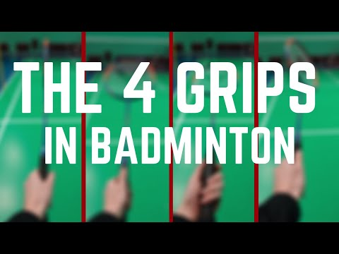

成長細節 01 / 拍面控制換一招 ↗
正手、反手，換握更清楚。
上場只記這一句
先握對，再換順。
先對照示範認清正手、反手的握法和拍面方向，再慢慢練習換握。這次只處理握法，不追求發力。
把一拍拆開，看清三個細節
- 準備
分別對照正手、反手示範，拍面方向是否跟你預期一致？
- 擊球
用輕球練習時，換握後能否把球送向同一個目標？
- 下一拍
球換到另一側時，能否及時改用合適握法，而不是一直握同一面？
放進回合：先練正反手交替來球，再放進短回合，記下哪一面較常打歪。
開始練習
帶著一個細節，試一組。
- 對照影片，分別擺出正手和反手握拍。
- 不用打球，慢慢換握 10 次，看拍面能否調整到想要的方向。
- 請同學近距離輕輕送球；正手、反手各打 10 球，分開記錄。
練完只看一件事
哪一面比較常打歪？
正手、反手各 10 球，分開記偏離目標的球數。下次用相同目標再試。

重點約 78 秒公開免費 · 不需加入會員
看懂這段，再上場試。
先看正手和反手怎樣握，留意拍面方向。
免費看 78 秒重點0:22–1:40 · 英語原片
免費基礎補充；2021 年影片，不計入本月新片。連結跳到開始處，不會自動停止；到結尾時間就可以停。
標記只記錄試練進度，儲存在這部裝置。
一個人怎麼練？還有小提醒
自己先試：面向鏡子，慢慢換正手和反手握拍；有同學時再用輕球檢查。
記住：這段拇指反手握法用於發球、平抽和雙打防守，不要直接套在後場反手。先用近距離輕球練。
下一步：兩面握法較清楚後，再試正反手交替來球。